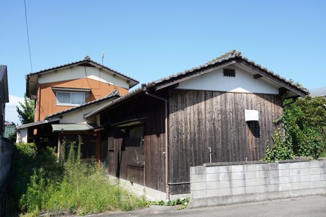

- 相続した家
- 家財がそのまま
- 傷み・雨漏り
- 遠方にお住まい
呉市の空き家、
そのままの状態で
買い取ります。
古い家も、片付けが終わっていない家も。地元・呉の不動産会社である当社が、買主として直接買い取ります。他社で断られた物件も、諦める前にご相談ください。
お電話でも：0823-27-7600 9:30〜17:00（日曜・祝日定休）

不問
写真はイメージです
WORRIES
「空き家が売れない…」
そんなお悩みはありませんか？
- 古い家なので、買い手がつくか不安
- 家財が残っていて、片付ける時間も体力もない
- 遠方に住んでいて、何度も現地に通えない
- 他の不動産会社に断られてしまった
- ご近所に知られずに売りたい
- 固定資産税や維持費の負担から、早く解放されたい
他社で断られたご相談も受付中
他社で値段がつかなかった物件も、
まずは私たちにご相談ください。
LINEで写真を送るだけ。簡易査定もOK
外観や室内の写真をお送りいただければ、おおよその査定額をお伝えします。24時間受付。

RISK
空き家を放置する3つのリスク
建物の劣化で、価値が下がる
人が住まない家は傷みが早く、時間がたつほど売りにくく、修繕費もかさみます。
税金と維持費がかかり続ける
固定資産税や草刈り・修繕の費用は、使っていなくても毎年発生します。管理不全と判断されると、税負担が増えることもあります。
防犯・近隣トラブルの原因に
不法侵入や不法投棄、草木の越境や瓦の落下など、ご近所とのトラブルにつながるおそれがあります。
すぐに売るか決められない方は、空き家管理（月額3,300円〜）もご利用いただけます。
MERIT
当社に買取を任せる5つのメリット
-
1
当社が直接買い取るから、仲介手数料は不要
買主は当社です。売主様と当社の直接取引なので、仲介手数料はかかりません。
-
2
片付け・リフォームなしで、そのまま売れる
家財が残っていても、建物が傷んでいても大丈夫。片付けや修繕をする前に、まずはそのままの状態でご相談ください。
-
3
買主探しが不要で、スピーディー
広告や内覧で買主を待つ期間がありません。お引っ越しや相続の手続きなど、期限のあるご事情もご相談ください。
-
4
ご近所に知られずに売却できる
チラシやインターネットへの広告掲載、内覧の対応がないため、周りに知られにくい売り方です。
-
5
「売る」以外の選択肢も比べられる
買取・仲介・リフォームして貸す・管理する。すべてを自社で扱う当社だから、売ることありきではなく、所有者様にとって一番良い方法をご提案します。
PURCHASE
こんな空き家も買い取ります
相続した空き家
築年数の古い家
家財・残置物が
そのままの家雨漏り・傷みの
ある家長年放置して
庭が荒れた家遠方にあって
管理できない家空き地・古家付き土地
他社で断られた物件
上記以外の物件や、権利関係が複雑な物件も、まずはお気軽にご相談ください。
COMPARISON
買取と仲介の違い
当社はどちらも扱っています。ご事情に合わせて選べます。
| 当社買取当社の直接買取 | 仲介 | |
|---|---|---|
| 買主 | 当社 | 一般の個人・法人 |
| 売却までの期間 | 早い（買主を探す必要がない） | 買主が見つかるまで、数か月以上かかることも |
| 仲介手数料 | 不要 | 必要 |
| 売却価格 | 相場より低めになりやすい | 相場に近い価格を目指せる |
| 片付け・修繕 | そのままの状態でご相談OK | 物件によっては必要になることも |
| 広告・内覧 | なし（ご近所に知られにくい） | 広告掲載・内覧の対応あり |
| 向いている方 | 早く・手間なく手放したい方 | 時間をかけても高く売りたい方 |
売る前に「貸す」も比べてみませんか？
リフォームして賃貸に出せば、家賃収入で維持費をまかないながら資産として残せます。
空き家再生・賃貸活用を見る
FLOW
買取の流れ
-
1
お問い合わせ
お電話・LINE・フォームからご連絡ください。
-
2
現地調査・査定
建物と土地の状態を確認します。
-
3
買取価格のご提示
仲介や賃貸の場合の見込みとも比べてご検討ください。
-
4
ご契約
内容にご納得いただけたら、売買契約を結びます。
-
5
決済・お引き渡し
代金をお支払いし、物件をお引き渡しいただきます。
Q&A
よくあるご質問
Q査定だけでも大丈夫ですか？
もちろんです。査定・ご相談は無料で、強引な営業は一切いたしません。
Q家の中に家財が残ったままでも売れますか？
はい、まずはそのままの状態でご相談ください。片付けが必要かどうかも含めて、物件ごとにご提案します。
Q遠方に住んでいても売却できますか？
はい。LINEで写真をお送りいただければ簡易査定ができます。現地の確認は当社が行いますので、何度も足を運んでいただく必要はありません。
Q相続登記がまだ済んでいませんが、相談できますか？
はい、まずはご相談ください。相続登記は2024年4月から義務化されています。売却に向けた手続きの進め方からご案内します。
Q買取と仲介、どちらが良いですか？
早さや手間の少なさを優先するなら買取、価格を優先するなら仲介が向いています。両方の見込みをお伝えしますので、比べて選んでいただけます。
Q売れるまでの間、家の管理はどうすればいいですか？
当社の空き家管理サービス（月額3,300円〜）をご利用いただけます。仲介での売却をご依頼中（専任媒介・専属専任媒介契約）は、管理料が30%引きになります。
Q売るか貸すか、迷っています。
リフォームして賃貸に出す空き家再生もご提案できます。家賃の見込みと工事費をお伝えしたうえで、売却と比べてご検討いただけます。

THINKING
自らも大家だから、
手放す方の気持ちが分かります。
私たちは仲介会社である前に、自ら不動産を所有し、35年以上経営してきたオーナーでもあります。思い出の詰まった家を手放す寂しさも、持ち続ける負担の重さも、どちらもよく分かります。
だからこそ、売ることありきではなく、管理・賃貸・仲介・買取のなかから、所有者様にとって一番良い方法を一緒に考えます。呉のまちの大切な資産を、誠実に次へお繋ぎします。
有限会社 仁方大森マリーナー
CONTACT
無料査定・ご相談
秘密厳守・強引な営業は一切いたしません。お気軽にご相談ください。